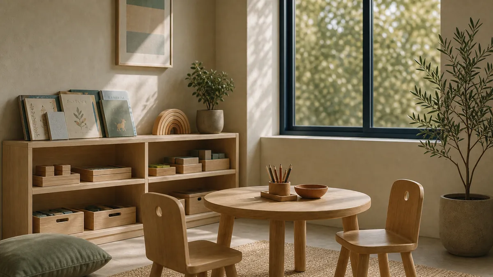
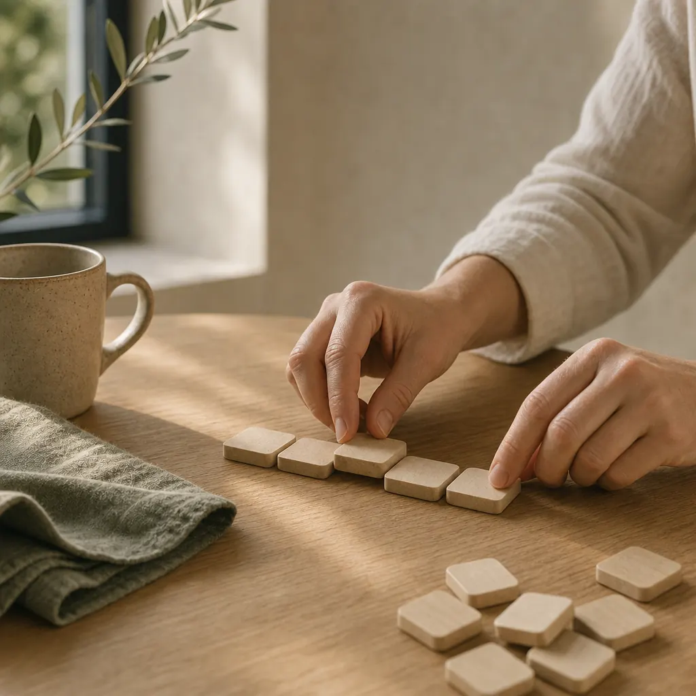
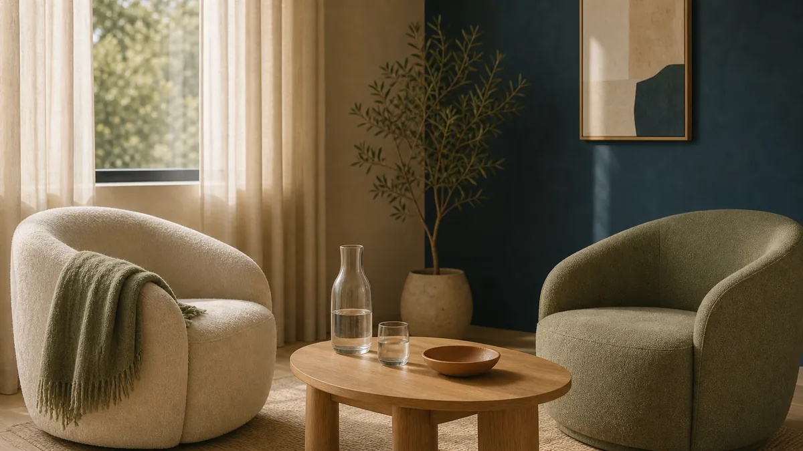

Pragma Institut
Desenvolupament, aprenentatge i acompanyament.
Infància · Adolescència · Famílies
- Logopèdia
- Psicopedagogia
- Psicologia
- Avaluació i diagnòstic
- Reforç escolar

Grup Pragma · Molins de Rei

L'estructura del grup
Cada persona necessita un acompanyament diferent. Per això treballem des de dues bandes que comparteixen criteri i es deriven casos internament quan cal.
Desenvolupament, aprenentatge i acompanyament.
Infància · Adolescència · Famílies

Psicologia clínica i salut mental.
Adults · Adolescència · Infància

Quan un cas ho necessita, la persona passa d'una banda a l'altra sense tornar a començar.
Orientació
Explica'ns breument què estàs buscant i t'orientem cap al professional o servei més adequat.
Aquesta eina no fa diagnòstics ni valoracions clíniques. Només t'orienta cap al lloc on et podrem escoltar amb calma.
Què fem
No és una llista tancada: és la manera com organitzem la feina. Cada servei té la seva pàgina amb el detall.
Procés multidisciplinari d'avaluació, diagnòstic i orientació.
Veure el serveiAvaluació i intervenció en parla, llenguatge, veu, lectura i escriptura.
Veure el serveiReeducacions psicopedagògiques i suport a l'aprenentatge escolar.
Veure el serveiAcompanyament emocional per a infants i adolescents, i orientació a famílies.
Veure el serveiSuport a Primària i ESO amb mètode i hàbits d'estudi.
Veure el serveiGrups per treballar la relació amb els altres i la gestió emocional.
Veure el serveiPsicoteràpia per a adults, adolescents i, quan cal, infància.
Veure el serveiAvaluació diagnòstica i seguiment, amb tractament farmacològic si escau.
Veure el serveiEspais grupals conduïts per professionals per compartir i avançar.
Veure el serveiTreball terapèutic amb la família com a context de cura.
Veure el serveiPsicologia i psiquiatria treballen juntes sobre cada cas.
Veure el serveiUnitat d'Avaluació i Diagnòstic
L'Avaluació i diagnòstic ordena un procés que sovint arriba ple de dubtes. Especialment orientada a infància i adolescència; també atén adults segons el cas.
Escoltem la família i la persona. Situem la demanda i acordem com continuar.
Proves i observació segons l'edat i el motiu de consulta, en diverses sessions.
L'equip posa en comú la informació des de la psicologia, la psicopedagogia i la logopèdia.
Arribem a una comprensió compartida del que passa i del que pot ajudar.
Document clar, útil per a la família i per a l'escola o altres serveis.
Recomanacions concretes i acompanyament per posar-les en marxa.
Cada procés s'adapta al motiu de consulta i a l'edat. Els terminis i el nombre de sessions es concreten a la primera entrevista.
Com treballem
El que canvia les coses no és una tècnica aïllada, sinó una manera de treballar sostinguda en el temps i coordinada entre professionals.
Cada procés s'ajusta a la persona i al seu moment, no a l'inrevés.
Psicologia, psicopedagogia, logopèdia, psiquiatria i infermeria sota un mateix criteri.
Les persones que t'atenen parlen entre elles sobre el teu cas.
La família forma part del procés i del canvi.
Ens comuniquem amb els centres educatius quan ajuda l'infant.
Amb EAP, CSMIJ i altres serveis del territori.
Entre Institut i Clínic quan un cas ho necessita, sense començar de zero.
No tanquem quan marxes: revisem com va evolucionant.
Trajectòria
Prou temps per haver vist evolucionar molts casos, i per treballar amb l'escola i els serveis del territori com qui es coneix de fa anys.
anys acompanyant persones i famílies
professionals a l'equip multidisciplinari
pacients atesos
Veus
Estem preparant aquest espai amb testimonis reals, amb el consentiment de les persones. De moment, l'estructura queda a punt.
Testimoni pendent de contingut real.
Testimoni pendent de contingut real.
Testimoni pendent de contingut real.
Ajudes i suport
Estem preparant la vessant social del grup: facilitar l'accés a l'atenció a les famílies que travessen situacions econòmiques difícils.
Ajudes i suport · ProperamentContacte
No cal que sàpigues exactament quin professional necessites. Explica'ns què passa i t'orientem.